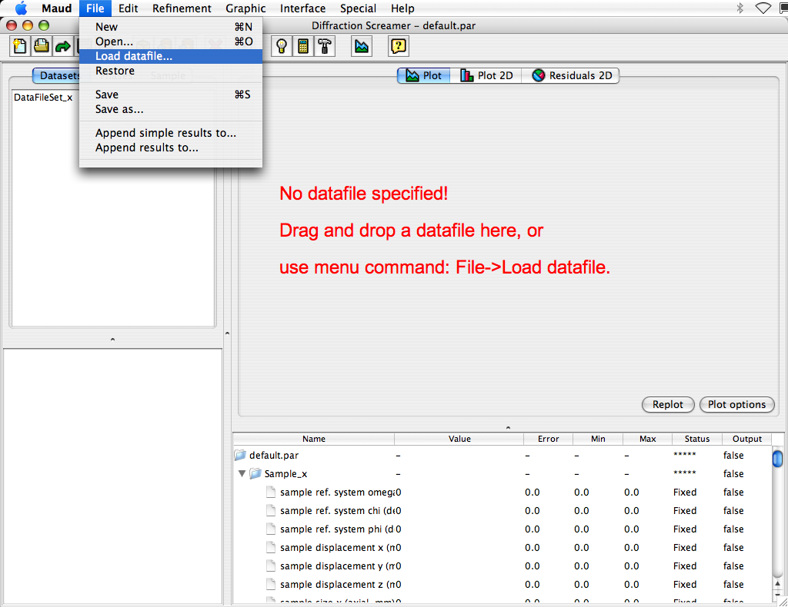
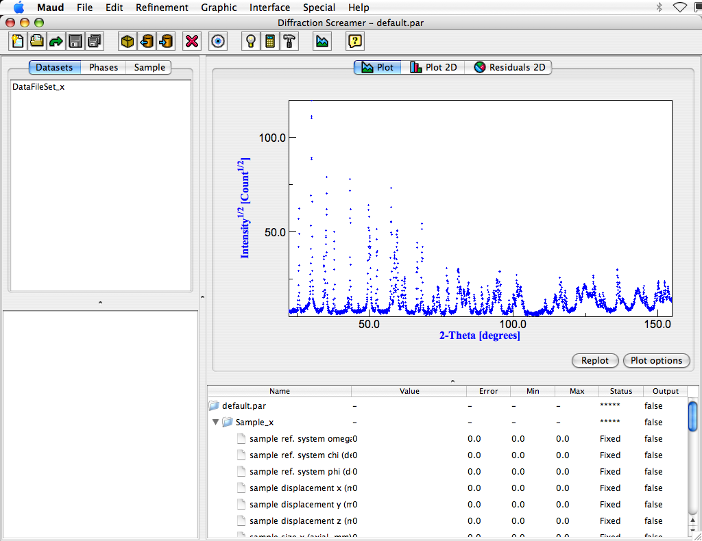

Building the analysis file (step 1: load the datafile)
- Start the Maud program or, if you are already in, choose 'New' from the 'File' menu to start a new analysis and
reset all.
- Load the data file alzrc.dat from the "Maud databases and examples directory" (the one Maud asked for the first
time you run it).
There are three ways to do it. Choose only one.
a) Locate the file in your system and drag and drop the file over the plot window of the principal Maud frame.
When you are over with the file you should notice the plot panel border is highlighted.
b) In the File menu choose Load datafile..., navigate to the file alzrc.dat and load it.

c) (This third one is the usual when working with more datasets and datafiles, to get more control where to
add and how many datafiles for each dataset to have) Select the Dataset_x with the mouse and press toolbar
button similar to an eye (it says edit the selected object of the visible list when you go with the mouse
over it). A new window will appear, select the Datafiles tab panel and press the Browse.. button
to load the datafile. Locate the alzrc.dat file in the databases and example directory and load it. Press the
OK button to close the dataset edit window at end.
- After loading the data file the main Maud window should look like this (you can drag the dividers between the
four parts of the main panel to adjust their size as you prefer):

- You may zoom in the spectrum plot in some details by click, old and drag the mouse over the window part you
want to zoom in. Double clicking the plot reset the zoom to the normal. By right clicking on the plot (CTRL+click,
if you have a one-button mouse) you have a small context menu for manual zooming or get a coordinate window.
Pressing the Plot options button you gain control over some plot characteristics.
- We do not need to modify the Instrument (inside the dataset) as the one loaded by default is a Bragg-Brentano
with the correct instrumental aberrations for this data file.
- Before to proceed with Step 2 (load and modify the phases) we save this analysis at the present state giving it
a new name so we can load it again if needed. To complete this choose Save analysis as... and choose a
location (better not inside the databases and examples directory) and a name for the file. It is adviced to
use a name with extension .par so in certain system (MacOSX for example) can be recognized as a Maud
analysis file and double clicking the file, it will be loaded automatically in Maud.